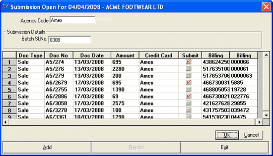

This function allows the user to mark the details of the credit card payments that are submitted and yet to be realized.
This helps in keeping track of the number of bills that are settled through credit cards, the number of bills that are submitted and yet to be submitted out of those settled bills.
How to reach: Cash > Credit Card Management > Submission
The credit card submission window is displayed.

In this window you can execute the following functions.
Add: To make a new credit card submission
Reprint:To reprint an existing credit card submission
Exit: To exit from the credit card submission window
Agency Code: Enter a valid agency code of the credit card or press F2 key and select the agency code from the respective browser window. On entering a valid agency code, the details of all the credit card submissions to be made, related to the selected agency code get automatically listed in the grid below.
Submission Details (Batch Sl. No): Enter the number denoting the batch of the credit card submissions to be made.
Note: The caption of the field (for e.g., Batch Sl. No.) is displayed according to the caption catalogued Payment Mode. Click here for more details.
The grid contains the details pertaining to transactions involving credit card payment. The details such as Doc Type, Doc no., Doc date, Amount, Credit Card type, is displayed in the grid automatically.
Select the check box under the column Submit to submit the corresponding credit card details for collection.